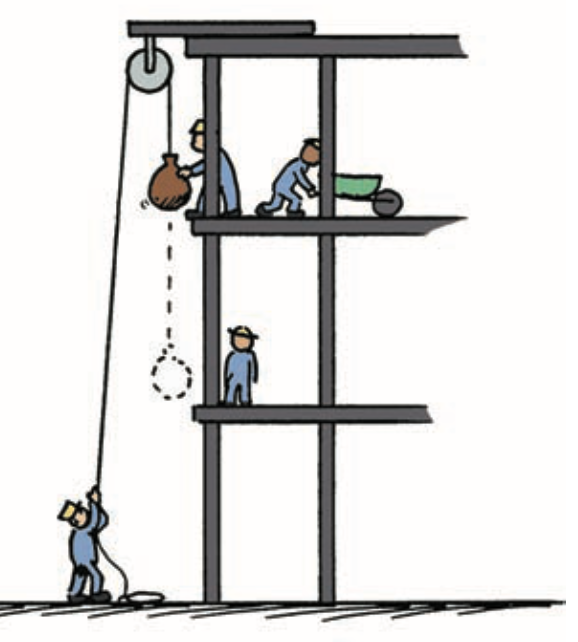

Work and Energy
Mathematical idea: Work, power, potential energy, and kinetic energy quantify different parts of an energy story.
Use source images, short reading cycles, discussion, and applications to connect the physical situation to a model you can explain.
Learning Target
Students will explain work as energy transfer and distinguish kinetic energy, potential energy, mechanical energy, and power.
I can statements
- I can determine whether a force does work on an object.
- I can explain that work requires force and motion in the direction of the force.
- I can distinguish kinetic energy from potential energy.
- I can calculate simple work, power, gravitational potential energy, and kinetic energy.
- I can explain how energy changes form in everyday situations.
Vocabulary
These are words you will see in this section. Do not define them yet.
- work
- energy
- power
- kinetic energy
- gravitational potential energy
- mechanical energy
- joule
- watt
Use the preview activity to decide which words you already know, recognize, or do not know yet. Watch for these words in bold when they are first introduced or defined in the reading.
Preview: Skim Before You Read
Directions
Before reading closely, skim the vocabulary list and the section. Look at titles, headings, bold words, pictures, captions, diagrams, tables, and formulas. Do not try to understand everything yet. Your job is to notice what already looks familiar and make predictions about what this section may explain.
Step 1 — Sort the vocabulary. Write each vocabulary word in the column that best matches what you know right now. You may move a word later.
| Know for sure | Recognize | Don’t know yet |
|---|---|---|
Step 2 — Skim the section. Record what catches your attention before you read closely.
| What I noticed | |
|---|---|
| What I predict | |
| What I wonder |
Content: Read, Look, Annotate, Apply
Directions
Read in short chunks. Annotate the prose and the figures together: underline evidence, circle or highlight bold vocabulary, label arrows or measured features, connect a sentence to an image, and write short questions or connections in the margins.
Reading 1: Work is energy transfer
In physics, work is not simply effort or tiredness. The source defines it as a transfer of energy that occurs when a force moves an object through a distance in the direction of the force.
For the simplest straight-line case, the assessment relationship is $W=Fd$. A larger force over the same distance transfers more energy, and the same force acting through a larger distance also transfers more energy.

Image read: Annotate the quantities, directions, or before-and-after evidence that the reading asks you to track.

Image read: Compare the visual evidence with the nearby reading. Mark the feature that best supports the physics claim.

Image read: Compare the visual evidence with the nearby reading. Mark the feature that best supports the physics claim.
If you push hard on a wall and it does not move, no work is done on the wall because the displacement is zero. Your body still uses chemical energy, but that is a different system-level question.
The unit of work and energy is the joule. One joule represents one newton of force acting through one meter in the direction of motion.
Stop and Discuss
- Compare the two lifting figures. Mark which variable changes in each case.
- Use the wall image to explain why force alone is not enough for mechanical work on an object.
Teacher support: Listen for evidence tied to the reading or figure, not just a vocabulary definition. Ask students to name what changes, what stays the same, and why.
For the simple cases used here, force and displacement point in the same direction. Work is measured in joules (J).
Example 1: Work or no work
A student pushes a 20 N cart 3 m in the direction of the push. Calculate the work done. Then compare with pushing the same force on a wall that does not move.
- Show the model, relationship, or comparison that answers the question.
- Explain what the result means physically.
Teacher answer: Model the reasoning explicitly. Check units/direction when calculation is used, and require a sentence that interprets the result rather than stopping at arithmetic.
You Try It 1: Work or no work
A student pulls a sled with 30 N in the direction of motion for 2 m. Calculate the work. What would the work be if the sled did not move?
- Use the same physics idea with this new situation.
- Explain how your evidence or calculation supports the conclusion.
Teacher answer: Expect the same core relationship as the example with the new context. Use errors to diagnose whether the student is confusing the quantity itself with the interaction or transformation that changes it.
Reading 2: Power is how fast work is done
The source points out that the same amount of work can be done slowly or quickly. power describes the rate at which work is done, so it distinguishes two machines that transfer the same energy in different amounts of time.
The assessment relationship is $P=\frac{W}{t}$. If two motors do the same work and one takes half the time, that motor has twice the power.
The unit of power is the watt, equal to one joule per second. Power does not mean “how much energy exists”; it tells how rapidly energy is transferred or work is done.
A high-power machine may complete a task faster, but doing a task faster does not change the amount of work when the same force and displacement are involved.
Stop and Discuss
- Explain the difference between doing more work and doing the same work with more power.
- Why can two people climb the same stairs and do similar work even if one produces greater power?
Teacher support: Listen for evidence tied to the reading or figure, not just a vocabulary definition. Ask students to name what changes, what stays the same, and why.
Power is measured in watts (W), where 1 W = 1 J/s.
Example 2: Same work, different time
Machine A does 600 J of work in 12 s. Machine B does 600 J in 6 s. Calculate each power and compare.
- Show the model, relationship, or comparison that answers the question.
- Explain what the result means physically.
Teacher answer: Model the reasoning explicitly. Check units/direction when calculation is used, and require a sentence that interprets the result rather than stopping at arithmetic.
You Try It 2: Same work, different time
Two students each do 900 J of work climbing stairs. One takes 15 s and one takes 10 s. Calculate and compare power.
- Use the same physics idea with this new situation.
- Explain how your evidence or calculation supports the conclusion.
Teacher answer: Expect the same core relationship as the example with the new context. Use errors to diagnose whether the student is confusing the quantity itself with the interaction or transformation that changes it.
Reading 3: Stored energy and position
Energy can be stored because of position or arrangement. gravitational potential energy is energy associated with an object’s position in a gravitational field. Raising an object requires work and increases this stored energy.
The assessment relationship $PE=mgh$ shows that gravitational potential energy depends on mass $m$, gravitational field strength $g$, and vertical height $h$ relative to a chosen reference level.

Image read: Annotate the quantities, directions, or before-and-after evidence that the reading asks you to track.
The pendulum figure makes the relative nature of gravitational potential energy visible. At the high ends of the swing, height and PE are greater. At the low point, the pendulum has less gravitational PE relative to that chosen low point.
mechanical energy is a useful name for energy associated with motion and position in a mechanical system. In this unit, the two central mechanical forms are kinetic and gravitational potential energy.
Stop and Discuss
- Mark where the pendulum has greatest height and where it has greatest speed.
- Explain why the chosen zero-height reference matters when discussing gravitational potential energy.
Teacher support: Listen for evidence tied to the reading or figure, not just a vocabulary definition. Ask students to name what changes, what stays the same, and why.
In these notes, use $g\approx10\text{ m/s}^2$ near Earth unless another value is given.
Example 3: Gravitational potential energy
A 3 kg backpack is lifted 2 m. Using $g\approx10\text{ m/s}^2$, calculate its gain in gravitational potential energy.
- Show the model, relationship, or comparison that answers the question.
- Explain what the result means physically.
Teacher answer: Model the reasoning explicitly. Check units/direction when calculation is used, and require a sentence that interprets the result rather than stopping at arithmetic.
You Try It 3: Gravitational potential energy
A 5 kg object is lifted 1.5 m. Using $g\approx10\text{ m/s}^2$, calculate the gravitational potential energy gained.
- Use the same physics idea with this new situation.
- Explain how your evidence or calculation supports the conclusion.
Teacher answer: Expect the same core relationship as the example with the new context. Use errors to diagnose whether the student is confusing the quantity itself with the interaction or transformation that changes it.
Reading 4: Kinetic energy and speed squared
kinetic energy is energy of motion. The source emphasizes that it depends on mass and on the square of speed, not just on speed itself.
The assessment relationship is $KE=\frac{1}{2}mv^2$. Doubling mass at the same speed doubles kinetic energy, but doubling speed makes kinetic energy four times as large because the speed is squared.

Image read: Annotate the quantities, directions, or before-and-after evidence that the reading asks you to track.
This speed-squared relationship explains why stopping distance and collision energy become much more significant at higher speeds. A modest increase in speed can produce a much larger increase in kinetic energy.
The pendulum-with-peg figure reinforces the connection between motion and stored energy: as the bob moves downward it gains kinetic energy, and as it rises it can trade that motion energy back into gravitational potential energy.
Stop and Discuss
- Trace the bob’s path and identify where energy of motion is greatest.
- Predict what happens to kinetic energy if speed doubles while mass stays the same.
Teacher support: Listen for evidence tied to the reading or figure, not just a vocabulary definition. Ask students to name what changes, what stays the same, and why.
Kinetic energy is measured in joules. The squared speed makes KE especially sensitive to speed changes.
Example 4: Kinetic energy comparison
Calculate the kinetic energy of a 2 kg cart moving at 4 m/s. Then predict the KE if its speed doubles without redoing every step.
- Show the model, relationship, or comparison that answers the question.
- Explain what the result means physically.
Teacher answer: Model the reasoning explicitly. Check units/direction when calculation is used, and require a sentence that interprets the result rather than stopping at arithmetic.
You Try It 4: Kinetic energy comparison
Calculate the kinetic energy of a 4 kg object moving at 3 m/s. Then explain what happens to KE if speed doubles.
- Use the same physics idea with this new situation.
- Explain how your evidence or calculation supports the conclusion.
Teacher answer: Expect the same core relationship as the example with the new context. Use errors to diagnose whether the student is confusing the quantity itself with the interaction or transformation that changes it.
Vocabulary: Define the Terms
You have now seen these words in the reading, images, and practice. Use this table to consolidate the physics meaning of each term.
| Vocabulary term | Definition |
|---|---|
| work | energy transfer when a force causes displacement in the direction of the force |
| energy | the capacity to cause change or do work, tracked through transfers and transformations |
| power | the rate at which work is done or energy is transferred |
| kinetic energy | energy an object has because of motion |
| gravitational potential energy | stored energy associated with height in a gravitational field |
| mechanical energy | energy associated with motion and position in a mechanical system |
| joule | the SI unit of work and energy |
| watt | the SI unit of power, equal to one joule per second |
Summary
- Work transfers energy when force produces displacement: $W=Fd$.
- Power tells how fast work is done: $P=\frac{W}{t}$.
- Gravitational potential energy depends on mass and height: $PE=mgh$.
- Kinetic energy depends on mass and speed squared: $KE=\frac{1}{2}mv^2$.
- Mechanical energy includes energy of motion and position.
Teacher support: Ask students to connect at least two summary bullets into one cause-and-effect explanation and to name the figure or example that best supports it.
Common Mistakes
| Mistake | Why it is tempting | Check instead |
|---|---|---|
| Feeling tired means mechanical work was done on an object. | Everyday “work” means effort. | Check for displacement in the direction of force. |
| Power and work are the same quantity. | Both describe machines doing tasks. | Work is energy transfer; power is the rate of that transfer. |
| Doubling speed doubles kinetic energy. | Momentum changes linearly with speed. | KE contains $v^2$, so doubling speed quadruples KE. |
What two conditions are required for a force to do work in the simple situations used in this section?
Two identical carts move at 4 m/s and 8 m/s. Without calculating exact joules, compare their kinetic energies and explain.
What is one thing you learned in this section? Explain it in at least one complete sentence.
What is one thing from this section you still need to understand or practice more? Be specific.